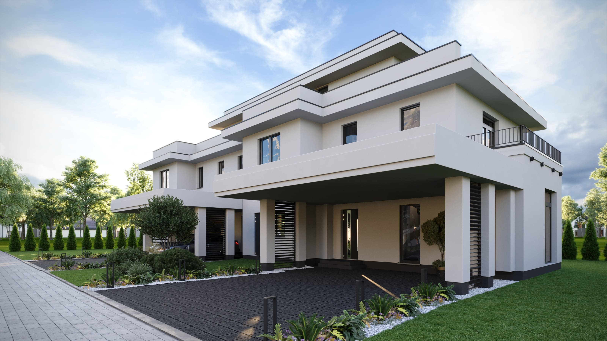
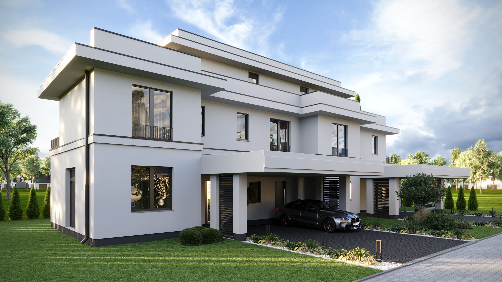
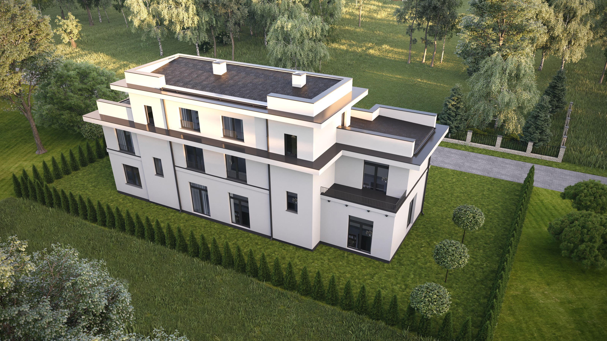

Dwa domy.
Jedna spokojna ulica.
Nowoczesny bliźniak w Kiełpinie — dwanaście kilometrów na północ od Warszawy, między lasem kampinoskim a Wisłą. Dwa odrębne lokale, każdy z własnym układem, za jedną, spójną elewacją.
Nowoczesny bliźniak w Kiełpinie — dwanaście kilometrów na północ od Warszawy, między lasem kampinoskim a Wisłą. Dwa odrębne lokale, każdy z własnym układem, za jedną, spójną elewacją.
Porzeczkowa 5 to dwa domy — Lokal 1 i Lokal 2 — współdzielące jedną działkę i jeden język architektoniczny, lecz każdy narysowany na własnym planie. Nie odbite, nie powtórzone: dwa indywidualne domy za jedną, spójną elewacją.
Lokalizacja. Kiełpin to najspokojniejszy zakątek Łomianek — przedmieście na północnym zachodzie Warszawy, otoczone z jednej strony Kampinoskim Parkiem Narodowym, z drugiej Wisłą. Czterominutowy spacer prowadzi do przystanku autobusowego na Kolejowej; centrum miasta jest trzydzieści minut jazdy samochodem.
Dom. Dwie kondygnacje, modernizm z płaskim dachem, wysunięte okapy i zadaszony carport na każdy lokal. Ogrody skierowane na południe, przeszklenia salonu od podłogi do sufitu, trzy sypialnie i duże pomieszczenie gospodarcze na górze. Materiały są celowo zwyczajne — biały tynk barwiony w masie, antracytowe aluminium, dębowe podłogi wewnątrz — dzięki czemu budynek starzeje się z godnością i jest ekonomiczny w utrzymaniu.
Dwa lokale. Lokal 1 i Lokal 2 nie są wzajemnym odbiciem. Każdy ma własny układ, własne proporcje pomieszczeń i własną relację z ogrodem i ulicą — dwa naprawdę różne domy, które łączy jedynie wspólna ściana i linia dachu.
Sześć wizualizacji od architekta, wykonanych z dokładnością odpowiadającą stanowi budowanemu. Drzewa, cyprysy, samochód — te elementy się zmieniają. Dom pozostaje taki, jak zaprojektowano.
 — 01 / 04
Elewacja frontowaPołudnie · ul. Porzeczkowa
— 01 / 04
Elewacja frontowaPołudnie · ul. Porzeczkowa

— 02 / 04 Widok z trzech czwartych, wschódPoranne słońce
— 03 / 04 Widok z trzech czwartych, zachódPóźne popołudnie
— 04 / 04 Działka i ogród1200 m² łącznie · żywopłot brzozowy na północyWszystko zaznaczone przerywaną linią w kolorze mchu jest ruchome — ściany wewnętrzne, punkty wodne, gniazdka. Przełączaj się między Lokalem 1 i Lokalem 2, przeglądaj trzy kondygnacje, a następnie zarezerwuj sesję konfiguracyjną.
Obie jednostki zostały już sprzedane. Współdzieliły działkę i język architektoniczny, ale każda miała własny układ, orientację i geometrię ogrodu.
Nie skąpimy tam, gdzie nie widać. Nudne specyfikacje — te, które kupujący rzadko czyta — to miejsce, gdzie R2 wydaje większość swojego budżetu.
Dwudziestoczterocentymetrowe ściany Silka z betonu komórkowego wapienno-krzemianowego z 20 cm wełny mineralnej. Cisza.
Schüco AWS 75, współczynnik U 0,8 W/m²K, antracytowa rama. Od podłogi do sufitu w salonach.
Pompa ciepła powietrze-woda Mitsubishi Ecodan, rozprowadzenie podłogowe, strefowanie na pomieszczenie.
Wentylacja mechaniczna z odzyskiem ciepła — filtrowana z pyłków, działa na poziomie 30 dB.
Europejska deska dębowa warstwowa, wykończenie olejowo-matowe. Możliwość dwukrotnego szlifowania przed wymianą.
Membrana EPDM, gwarancja 35 lat. Wcześniej okablowany dla instalacji fotowoltaicznej 6 kWp.
Zadaszony, oświetlony, dedykowane gniazdo 11 kW na osobnym obwodzie do ładowania samochodów elektrycznych.
Ogrodzony, w pełni obsiany trawą, żywopłot z grabu na północy, zachowany jeden dorosły dąb.
Porzeczkowa znajduje się w Kiełpinie, na spokojnym północno-zachodnim skraju Łomianek — wciśnięta między las kampinoski a Wisłę, a jednocześnie w krótkim zasięgu od Warszawy.
Autobusy z przystanku Kolejowa dojeżdżają do stacji końcowej metra Młociny w około dwadzieścia pięć minut, a stamtąd jedna linia prowadzi prosto do centrum Warszawy. Samochodem droga ekspresowa S7 i Wisłostrada utrzymują miasto w zasięgu pół godziny.
Kampinoski Park Narodowy zaczyna się kilka ulic dalej — 385 km² lasu sosnowego, wydm śródlądowych i mokradeł, rezerwat biosfery UNESCO i jeden z największych parków narodowych w Europie. Wisła płynie po drugiej stronie miasta, z nadrzecznymi ścieżkami i plażami.
Łomianki funkcjonują samodzielnie: przedszkola i szkoły, centrum sportu i kultury ICDS, przychodnie zdrowia, supermarkety i targ weekendowy — codzienne życie bez konieczności jeździć do miasta.
R2 Living to marka deweloperska R2 Capital — warszawskiej firmy inwestycyjnej działającej na rynku nieruchomości.
Budujemy jeden projekt na raz. Nie dlatego, że musimy — ale dlatego, że chcemy, aby każda budowa otrzymała całą naszą uwagę. Jeden projekt oznacza jednego inwestora, do którego można zadzwonić, jeden zestaw decyzji do śledzenia, jedno miejsce, które ma naprawdę znaczenie.
Budujemy w spokojniejszych podwarszawskich okolicach. Duże działki, dobre szkoły w pobliżu, dostęp do miasta bez jego zgiełku. Takie sąsiedztwo, które rodzina wybiera, a nie na które się godzi.
Jeden projekt na raz. Wystarczająco mały, by niczego nie przegapić, wystarczająco rozważny, by niczego nie robić w pośpiechu.
Aktualizacje postępu, wizyty na budowie, bezpośredni kontakt z inwestorem. Nie czekasz na wiadomości — jesteś częścią budowy.
Materiały, tolerancje i plany domów publikowane od pierwszego dnia. Bez drobnego druku, bez niespodzianek przy odbiorze.
Wizyty na miejscu odbywają się co tydzień, w soboty o 10:00 i 14:00. Spotykamy się na rogu ulic Porzeczkowej i Akacjowej, obchodzimy działkę, a Ty poznasz architekta.